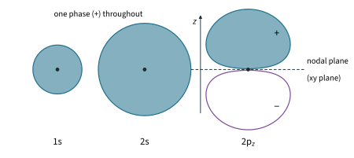
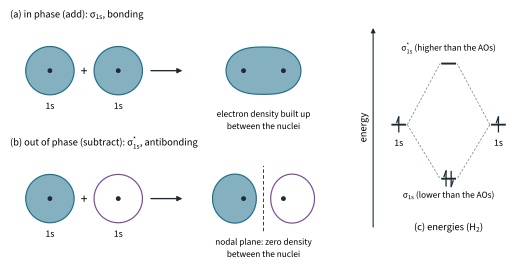
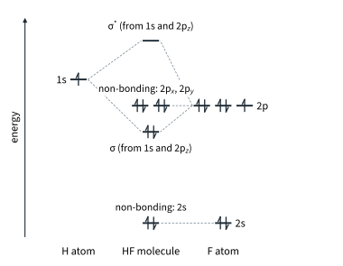
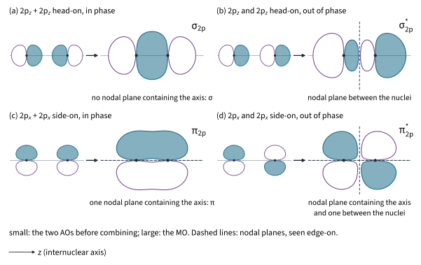
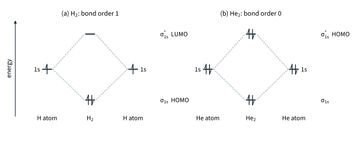
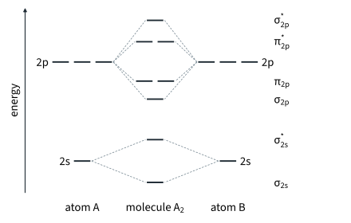
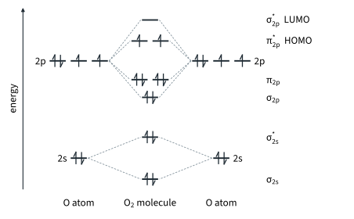
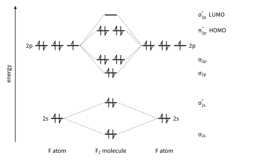
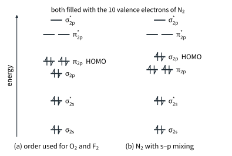

Molecular Orbitals and Light 1
Chapter H3.1 · Molecular Orbitals and Light Part 1
On this page
- Introduction
- Key terms
- From atomic orbitals to molecular orbitals
- Bonding, antibonding and non-bonding orbitals
- σ and π symmetry
- Molecular orbitals as energy levels
- Hydrogen and helium
- MO diagrams for second-period diatomics
- Oxygen: the paramagnetic molecule
- Fluorine and bond strength
- More dioxygen species
- Nitrogen and orbital mixing
- Summary
Introduction
Pour liquid oxygen between the poles of a strong magnet and it stays there, held in the gap. Pour liquid nitrogen and it runs straight through. Oxygen is attracted by a magnetic field because it has unpaired electrons. Yet the dot-and-cross structure you drew in Topic 2 Part 1, O=O, has every electron in a pair. The Lewis model, so useful throughout H2 Chemistry, cannot explain this. You need a model in which the electrons belong to the whole molecule: molecular orbital (MO) theory.
MO theory does more than rescue oxygen. Each molecular orbital is a definite energy level of the molecule, and spectroscopy, the subject of H3 Section 1, is all about moving electrons (and nuclei) between energy levels. This Part builds MOs from atomic orbitals and uses them for H2, He2, O2 and F2. Part 2 does the same for the π electrons of polyenes and benzene, then turns to light and the energy levels it can probe. You need Topic 1 Part 2 (orbitals and the filling rules) and Topic 2 Part 1 (σ and π bonds) from H2.
Key terms
You will use these terms throughout this Part.
| Term | Meaning |
|---|---|
| Atomic orbital (AO) | A region of space around one atom where there is a high chance of finding an electron (Topic 1 Part 2). |
| Molecular orbital (MO) | A region of space where there is a high chance of finding an electron, spread over two or more nuclei. |
| LCAO | Linear combination of atomic orbitals: MOs are formed by combining (adding and subtracting) AOs. |
| Bonding MO | An MO formed by in-phase combination; electron density is built up between the nuclei; lower in energy than the AOs. |
| Antibonding MO | An MO formed by out-of-phase combination, written with a star (σ*, π*); a nodal plane between the nuclei; higher in energy than the AOs. |
| Non-bonding MO | An AO with no partner of matching symmetry and similar energy; it stays on its atom at about its original energy. |
| σ symmetry | The MO is cylindrically symmetrical about the internuclear axis: no nodal plane contains the axis. |
| π symmetry | The MO has one nodal plane that contains the internuclear axis; the electron density lies above and below (or in front of and behind) the axis. |
| Nodal plane | A plane on which the electron density is zero (the wavefunction changes sign there). |
| Degenerate | Of the same energy, e.g. the two π2p MOs. |
| Bond order | ½ × (number of electrons in bonding MOs − number of electrons in antibonding MOs). |
| Paramagnetic | Has one or more unpaired electrons; drawn into a magnetic field. |
| Diamagnetic | All electrons paired; very weakly pushed out of a magnetic field. |
| HOMO | Highest occupied molecular orbital. |
| LUMO | Lowest unoccupied molecular orbital. |
From atomic orbitals to molecular orbitals
In Topic 1 Part 2 an orbital was a region of space where there is a high chance of finding an electron. An atomic orbital (AO) belongs to one atom. A molecular orbital (MO) is the same idea for a molecule: it spreads over two or more nuclei, and an electron in it belongs to the molecule as a whole.
Phase
An orbital comes from a wavefunction, and a wavefunction has a sign, + or −, in each part of space. The sign is called the phase. It is not a charge: an electron is just as likely to be found in a negative lobe as in a positive one of the same size. What matters is how the phases of two AOs match when they overlap. In this chapter's figures a shaded lobe is positive and an open lobe is negative.
- A 1s orbital has one phase throughout. A 2s orbital also has a small inner region of opposite sign, inside a spherical (radial) node; it is ignored here because it does not affect the overlap picture, so 2s is treated as one phase.
- A 2p orbital has two lobes of opposite phase, with a nodal plane through the nucleus where the electron density is zero (Fig 1).

Linear combination of atomic orbitals
Take two hydrogen atoms, each with a 1s AO, and bring them together. The two AOs can combine in two ways, so they give two MOs (Fig 2):
- In phase (add): the two AOs overlap with the same sign, the waves reinforce, and electron density builds up between the nuclei. This is the bonding MO, σ1s.
- Out of phase (subtract): the AOs overlap with opposite signs, the waves cancel between the nuclei, and there is a nodal plane halfway between them, perpendicular to the axis, where the electron density is zero. This is the antibonding MO, σ*1s.

Bonding, antibonding and non-bonding orbitals
Why does density between the nuclei bond? As Topic 2 said, all chemical bonds are electrostatic. Electrons concentrated between two nuclei are attracted by both, and both nuclei are attracted towards them: the electrons act as a glue. Electrons in an antibonding MO sit mostly outside the region between the nuclei, so the nuclei are pulled apart and also repel each other more. So, for each pair of AOs that combine, the bonding MO goes down in energy and the antibonding MO goes up.1
Further example: non-bonding orbitals in hydrogen fluoride
In HF the hydrogen atom brings one 1s AO; the fluorine atom brings a 2s AO and three 2p AOs. Take the H–F bond as the z axis. Fluorine is more electronegative than hydrogen, so its AOs lie lower in energy than H 1s (Fig 3):
- H 1s and F 2pz point at each other along the axis, overlap head-on and are close enough in energy to combine: they give a bonding MO (σ) and an antibonding MO (σ*). (Why they are called σ is in the next section.)
- F 2px and 2py point at right angles to the axis. Any overlap of their positive lobe with H 1s is cancelled by their negative lobe, so there is no net overlap: they have no partner of matching symmetry on H and are non-bonding. They are two lone pairs.
- F 2s lies far lower in energy than H 1s, so it is treated as non-bonding too: the third lone pair.

HF has 1 + 7 = 8 valence electrons. Two go into σ and six into the three non-bonding MOs; σ* is empty. So bond order = ½ × (2 − 0) = 1, a single bond with three lone pairs on fluorine, just as the dot-and-cross structure says.
σ and π symmetry
These are the σ and π bonds of Topic 2 Part 1 (and 11.1 Part 1), now as MOs: σ from head-on overlap, π from side-on overlap. Take the internuclear axis as z. When two second-period atoms come together, their AOs combine in three ways:2
- 2s + 2s → σ2s and σ*2s, just like 1s + 1s.
- 2pz + 2pz: the lobes point at each other, so they overlap head-on → σ2p and σ*2p (Fig 4(a) and (b)).
- 2px + 2px and 2py + 2py: the lobes are parallel, so they overlap side-on → two π2p MOs and two π*2p MOs (Fig 4(c) and (d)). The pair from 2px and the pair from 2py are identical apart from direction, so the two π2p MOs are degenerate, and so are the two π*2p MOs.
So the eight valence AOs of two second-period atoms (2s and three 2p on each) give eight MOs: σ2s, σ*2s, σ2p, two π2p, two π*2p and σ*2p.
Look at the nodal planes in Fig 4. σ2p has none containing the axis. π2p has one: the yz plane, edge-on as the dashed line along the axis, with density above and below it. Each starred MO has an extra nodal plane between the nuclei. Notice too that σ2p has small outer lobes beyond each nucleus: the inner lobes of the two 2pz AOs add up and the outer lobes stay. Only the phases matter for the label, not the exact shape.

Molecular orbitals as energy levels
Each MO is a definite energy level of the molecule, just as each AO is a definite energy level of an atom. The electrons of a molecule go into its MOs by the same three rules you used for atoms in Topic 1 Part 2:
- aufbau: fill the MOs in order of increasing energy, lowest first;
- Pauli: at most two electrons in each MO, with opposite spins;
- Hund: in degenerate MOs, put the electrons in singly, with parallel spins, before any pairing.
The HOMO is the highest occupied MO and the LUMO the lowest unoccupied MO. They matter in reactions (electrons are given from the HOMO and accepted into the LUMO) and in spectroscopy (Part 2): the lowest-energy electronic transition of a molecule moves an electron from the HOMO to the LUMO.
A molecule with one or more unpaired electrons is paramagnetic: it is drawn into a magnetic field. One with all its electrons paired is diamagnetic: it is very weakly pushed out of a field.
Hydrogen and helium
Worked example 1: H2 and He2
Use MO diagrams to find the bond orders of H2 and He2, and explain why helium is monatomic.
(To answer this, you have to combine the two 1s AOs into σ1s and σ*1s, then count the electrons into them (Fig 5).)
H2. Each H atom brings one electron. Both go into σ1s, with opposite spins: the configuration is σ1s2.
bond order = ½ × (2 − 0) = 1
A single bond, as in the dot-and-cross structure. All electrons are paired, so H2 is diamagnetic. HOMO = σ1s, LUMO = σ*1s. The H–H bond energy is 436 kJ mol−1 (Data Booklet) and the bond length 0.074 nm (literature value).

He2. Each He atom brings two electrons. Four electrons fill σ1s and then σ*1s: σ1s2 σ*1s2.
bond order = ½ × (2 − 2) = 0
The antibonding pair cancels the bonding pair: no bond, so He2 does not exist and helium is monatomic.
MO diagrams for second-period diatomics
For O2 and F2 use the eight valence MOs from the 2s and 2p AOs (Fig 6). In order of increasing energy:
σ2s < σ*2s < σ2p < π2p (two, degenerate) < π*2p (two, degenerate) < σ*2p

The 1s AOs also combine, to σ1s and σ*1s, but these lie far lower in energy, are both full and cancel each other (two bonding and two antibonding electrons). So MO diagrams show only the valence 2s and 2p MOs, and electron counts mean valence electrons.
This order assumes the 2s and 2p AOs combine separately (no orbital mixing). It is correct for O2 and F2, and 9813 does not require mixing.3 The 2s AOs are drawn well below the 2p AOs.
Oxygen: the paramagnetic molecule
Worked example 2: O2
Draw the MO diagram of O2. Write its configuration, find its bond order, and explain why O2 is paramagnetic although its Lewis structure suggests it should not be. Identify the HOMO and LUMO.
(To answer this, you have to count the valence electrons, 2 × 6 = 12, and feed them into Fig 6 from the bottom, remembering Hund's rule for the degenerate π*2p pair.)

The first ten electrons fill σ2s, σ*2s, σ2p and the two π2p MOs. Electrons 11 and 12 reach the degenerate π*2p pair and, by Hund's rule, go in one in each, with parallel spins:
O2: σ2s2 σ*2s2 σ2p2 π2p4 π*2p2
Bonding electrons: σ2s2, σ2p2, π2p4 = 8. Antibonding electrons: σ*2s2, π*2p2 = 4.
bond order = ½ × (8 − 4) = 2
A double bond, as in O=O. But MO theory also predicts two unpaired electrons, so O2 is paramagnetic. The Lewis (dot-and-cross) structure O=O has every electron paired and predicts diamagnetic O2. Experiment agrees with MO theory: liquid oxygen (b.p. −183 °C) is held between the poles of a strong magnet, while liquid nitrogen (b.p. −196 °C) pours straight through (boiling points are literature values). N2 has all its electrons paired; you will see its diagram in the Enrichment box at the end of this Part.
HOMO and LUMO. The HOMO is π*2p: two degenerate MOs with one electron in each. The LUMO is σ*2p, the lowest completely empty MO.4
Fluorine and bond strength
Worked example 3: F2
Draw the MO diagram of F2, find its bond order, magnetic behaviour, HOMO and LUMO. Then use the bond energies below to explain why F–F is so much weaker than H–H, although both have the same bond order.
(To answer this, you have to feed 2 × 7 = 14 valence electrons into Fig 6.)
F2: σ2s2 σ*2s2 σ2p2 π2p4 π*2p4
bond order = ½ × (8 − 6) = 1
All electrons are paired, so F2 is diamagnetic. HOMO = π*2p (now full); LUMO = σ*2p (Fig 8).

Compare the three molecules met so far:
| Bond | Bond order | Bond energy / kJ mol−1 (Data Booklet) | Bond length / nm (literature) |
|---|---|---|---|
| H–H | 1 | 436 | 0.074 |
| O=O | 2 | 496 | 0.121 |
| F–F | 1 | 158 | 0.142 |
The higher bond order of O2 gives a stronger bond than F2, as expected. But F–F, with the same bond order as H–H, is much weaker. Bond order compares bonds between similar atoms; between different atoms other factors matter:
- F atoms are much larger than H atoms (the bond is 0.142 nm against 0.074 nm), so the 2p AOs overlap less well than the small 1s AOs, and the bonding density between the nuclei is less concentrated;
- the filled π2p and π*2p MOs cancel each other's bonding effect and amount to lone pairs on the two F atoms (three on each, as in the dot-and-cross structure). With the two F atoms this close together, the lone pairs on the two atoms are close enough to repel each other strongly. H2 has no lone pairs.
More dioxygen species
Worked example 4 (Further example): O2+ and O22−
Find the bond orders and magnetic behaviour of O2+ and O22−, and explain the order of bond lengths O2+ 0.112 nm, O2 0.121 nm, O22− 0.149 nm (literature values).
(To answer this, you have to start from O2 and remove or add electrons at the HOMO: here that is π*2p both ways.)
- O2+ (11 valence electrons): remove one electron from π*2p: … π*2p1. Bond order = ½ × (8 − 3) = 2.5. One unpaired electron: paramagnetic.
- O22− (14 valence electrons, the peroxide ion, as in Na2O2 (H2O2 has the same O–O unit in a molecule)): add two electrons to π*2p: … π*2p4. Bond order = ½ × (8 − 6) = 1. All paired: diamagnetic. The O–O single bond energy is 150 kJ mol−1, against 496 kJ mol−1 for O=O (Data Booklet).
Bond order O2+ 2.5 > O2 2 > O22− 1, so the bond lengths run O2+ < O2 < O22−: the higher the bond order, the shorter the bond.
Nitrogen and orbital mixing

Summary
The diatomic species of this Part in one table (valence electrons only for O2 and its ions and F2).
| Species | Valence electrons | Configuration | Bond order | Unpaired | Magnetic | HOMO | LUMO |
|---|---|---|---|---|---|---|---|
| H2 | 2 | σ1s2 | 1 | 0 | dia | σ1s | σ*1s |
| He2 | 4 | σ1s2 σ*1s2 | 0 | 0 | no molecule | σ*1s | – |
| O2 | 12 | σ2s2 σ*2s2 σ2p2 π2p4 π*2p2 | 2 | 2 | para | π*2p | σ*2p |
| O2+ | 11 | … π2p4 π*2p1 | 2.5 | 1 | para | π*2p | π*2p (the empty one of the pair) |
| O22− | 14 | … π2p4 π*2p4 | 1 | 0 | dia | π*2p | σ*2p |
| F2 | 14 | σ2s2 σ*2s2 σ2p2 π2p4 π*2p4 | 1 | 0 | dia | π*2p | σ*2p |
| Rule | Key points |
|---|---|
| LCAO | n AOs combine to give n MOs; only AOs of similar energy and the right symmetry (overlap) combine. |
| Bonding and antibonding | In phase: bonding, density between the nuclei, lower energy. Out of phase: antibonding (*), nodal plane between the nuclei, higher energy. No partner: non-bonding (a lone pair). |
| σ and π | σ: no nodal plane containing the axis (head-on: 2s + 2s, 2pz + 2pz). π: one nodal plane containing the axis (side-on: 2px, 2py); π2p and π*2p come in degenerate pairs. |
| Filling | Each MO is a discrete energy level: aufbau, Pauli, Hund. Order (O2, F2): σ2s < σ*2s < σ2p < π2p < π*2p < σ*2p. |
| Bond order | ½ × (bonding − antibonding electrons); higher bond order, stronger and shorter bond; 0 means no molecule. Odd electron count: paramagnetic. |
Additional information
- Beyond the syllabus: an antibonding MO is raised slightly more than the bonding MO is lowered. So filling both (as in He2, bond order 0) is not just "no bond" but a slight repulsion. ↩
- Beyond the syllabus: university texts add a label g or u to each MO (for example σg and σu*) to show whether it keeps or changes sign on inversion through the centre of the molecule. 9813 uses σ, σ*, π and π* only. ↩
- Beyond the syllabus: for O and F the energy gap between the 2s and 2p AOs is large, so a 2s AO on one atom hardly interacts with a 2pz AO on the other, and mixing can be ignored. For B, C and N the gap is smaller (see the Enrichment box on nitrogen). ↩
- Beyond the syllabus: because the π*2p MOs of O2 are only half-filled, they, not σ*2p, are the lowest-energy place for an extra electron. A singly occupied MO like this is sometimes called a SOMO. ↩
- Beyond the syllabus: the two unpaired electrons of ground-state O2 have parallel spins (a "triplet" state). Ordinary molecules have all their electrons paired, and a direct reaction with them would need a spin to flip, which is slow. A radical, with its own unpaired electron, has no such problem. That is why autoxidation needs a radical to start the chain and then runs as a chain reaction. ↩